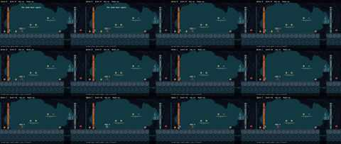
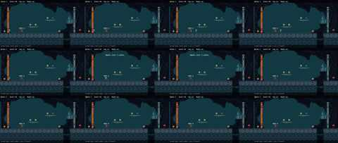
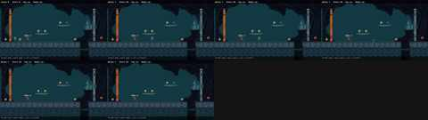
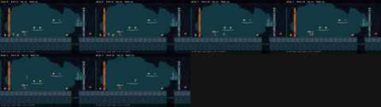
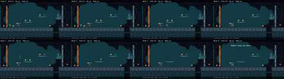
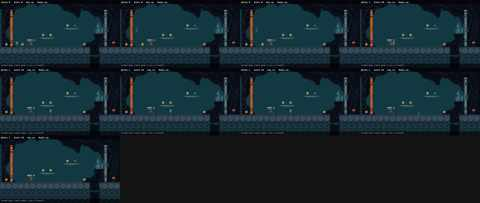

Shed door says it opens but remains closed and blocks left coin
ConfirmedExpected Pressing E next to orange shed door should visibly open/remove it so leftmost coin area is reachable.
Seen Message 'The shed door opens.' appeared, but orange door sprite remained fully closed in place; repeated E and walking/jumping left could not pass it and leftmost coin remained unreachable behind it.
Step 14
Evidence Frames 1-2 show 'The shed door opens.'; all 12 frames including final show orange vertical door on left still present; x: 71 -> 71 (unchanged), y: 226 -> 226 (unchanged), shedOpen: True -> True (unchanged)
State change x: 71 -> 71 (unchanged); y: 226 -> 226 (unchanged); coins: 0 -> 1; score: 0 -> 10; key: False -> False (unchanged); boots: False -> False (unchanged); won: False -> False (unchanged); shedOpen: True -> True (unchanged); doorOpen: False -> False (unchanged)

Character disappears/invisible after jumping toward low floating platform
ConfirmedExpected Character should remain visible, land on platform or fall back to ground.
Seen After walking right from boots shop and jumping (space/right+space), character sprite vanished completely from screen. HUD stayed Coins 1 Score 10. Left presses, jump, and even R restart did not make character reappear in screenshot.
Step 25
Evidence early frames show character sprite by 'BOOTS 3c', middle to bottom row frames show empty ground with 'Coins 1 Score 10', state x: 71 -> 437 y: 226 -> 2000 coins 1->1 score 10->10
State change x: 71 -> 437; y: 226 -> 2000; coins: 1 -> 1 (unchanged); score: 10 -> 10 (unchanged); key: False -> False (unchanged); boots: False -> False (unchanged); won: False -> False (unchanged); shedOpen: True -> True (unchanged); doorOpen: False -> False (unchanged)

R restart does not work after character disappears
ConfirmedExpected Pressing R when stuck/invisible should restart level, resetting Coins/Score and respawning character.
Seen After character vanished, pressing R left screen unchanged: Coins 1 Score 10, character still invisible, coins still collected.
Step 31
Evidence Frame1 'Coins 0 Score 0' with visible character -> Frames2-4 'Coins 1 Score 10' with visible character -> final two frames 'Coins 1 Score 10' with character absent; state coins: 0 -> 1 score: 0 -> 10 with no reset to 0, x: 90 -> 315 y: 226 -> 844
State change x: 90 -> 315; y: 226 -> 844; coins: 0 -> 1; score: 0 -> 10; key: False -> False (unchanged); boots: False -> False (unchanged); won: False -> False (unchanged); shedOpen: False -> False (unchanged); doorOpen: False -> False (unchanged)

Platform coins give inconsistent score (11 instead of 10)
ConfirmedExpected Every identical coin should give same reward: first ground coin gave +1 Coin, +10 Score (0->1, 0->10).
Seen Collecting the two coins on low floating platform went from Coins 1 Score 10 to Coins 3 Score 21. That is +2 Coins but only +11 Score total for two coins, not +20 (expected Score 30). One of those coins gave non-standard score.
Step 37
Evidence frame 3 shows 'Coins 1 Score 10' after first ground coin (0->1, 0->10); bottom-left frame still 'Coins 1 Score 10'; final frame shows 'Coins 3 Score 21'; state values coins: 0 -> 3 score: 0 -> 21
State change x: 90 -> 270; y: 226 -> 176; coins: 0 -> 3; score: 0 -> 21; key: False -> False (unchanged); boots: False -> False (unchanged); won: False -> False (unchanged); shedOpen: False -> False (unchanged); doorOpen: False -> False (unchanged)

Boots purchased but HUD still says Boots no
ConfirmedExpected Buying boots for 3c should set Boots to yes and grant boots effect.
Seen Paid 3 coins (Coins 3->0, message 'Thanks! Enjoy the boots!') but top bar still reads 'Boots no'.
Step 39
Evidence Frame7 top bar 'Coins 3 Score 21 Key no Boots no' -> final frame top bar 'Coins 0 Score 21 Key no Boots no' with message 'Thanks! Enjoy the boots!'; state boots: False -> False unchanged, coins: 0 -> 0 hiding intermediate 3
State change x: 90 -> 180; y: 226 -> 226 (unchanged); coins: 0 -> 0 (unchanged); score: 0 -> 21; key: False -> False (unchanged); boots: False -> False (unchanged); won: False -> False (unchanged); shedOpen: False -> False (unchanged); doorOpen: False -> False (unchanged)

Character can fall through ground edge and disappears below platform
ConfirmedExpected Character should stand on solid tiled ground and not sink through it.
Seen After right+space from under low platform, character landed partially sunk, then disappeared below ground on subsequent move; screenshot shows no character on solid ground.
Step 54
Evidence y: 226 -> 388 shows fall below ground level; x: 90 -> 307 shows move right; middle frames show character standing on tiled ground, frame 8 shows character at right edge of ground, final frame shows solid ground with no character visible
State change x: 90 -> 307; y: 226 -> 388; coins: 0 -> 1; score: 0 -> 10; key: False -> False (unchanged); boots: False -> False (unchanged); won: False -> False (unchanged); shedOpen: False -> False (unchanged); doorOpen: False -> False (unchanged)
